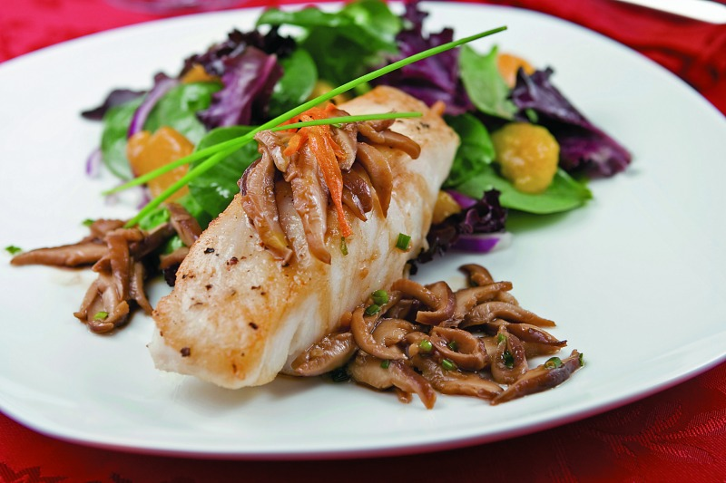

media cucharadita de raíz de jengibre rallada (Opcional)
3 cucharadas soperas de Ketchup HEINZ®
1 cucharada de chile de árbol seco en polvo
el jugo de 2 limones
el jugo de media naranja
el jugo de media toronja
½ cucharadita de ralladura de limón
½ cucharadita de ralladura de naranja
½ cucharadita de ralladura de toronja
3 ó 4 cucharadas de aceite de oliva
sal y pimienta
Platillo para 4 personas
Preparación:
En una cazuela con aceite caliente, dora bien el pollo a fuego medio.
Añade el ajo, el apio y el jengibre picado, deja dorar un poco y agrega el jugo de los cítricos con una pizca de ralladura de los mismos. Revuelve bien.
incorpora la Ketchup HEINZ®, el polvo de chile de árbol y salpimenta.
Tapa hasta que el pollo esté tierno y deja que la salsa espese un poco.
Puedes añadir un poco de agua o consomé de pollo para acabar la cocción.
Sirve con guarnición de verduras al vapor con mantequilla, arroz, puré de papa, papas fritas o ensalada de berros.
Pescado con setas

Ingredientes:
sal y pimienta
200 g de setas
1 taza de vino blanco
½ taza de aceite de oliva
4 filetes de pescado blanco
Platillo para 4 personas
Preparación:
Salpimienta las setas, resérvalas durante algunos minutos para que se sazonen y adquieran un buen sabor.
Pon en un tazón las setas y añade el vino y el aceite de oliva. Cuece a fuego bajo hasta que las setas se suavicen.
Coloca los filetes de pescado en un refractario y salpimiéntalos por ambos lados. Añade las setas para que se cocinen junto con el pescado.